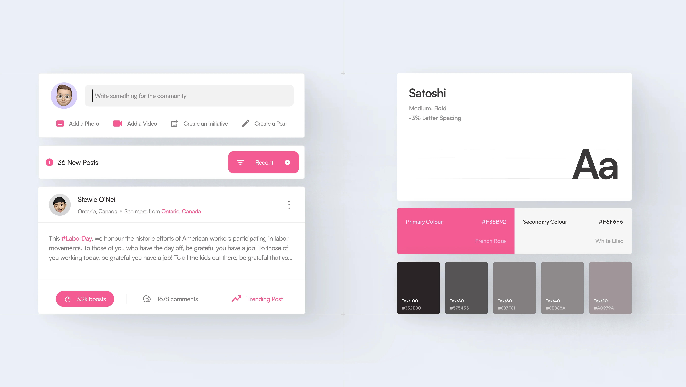
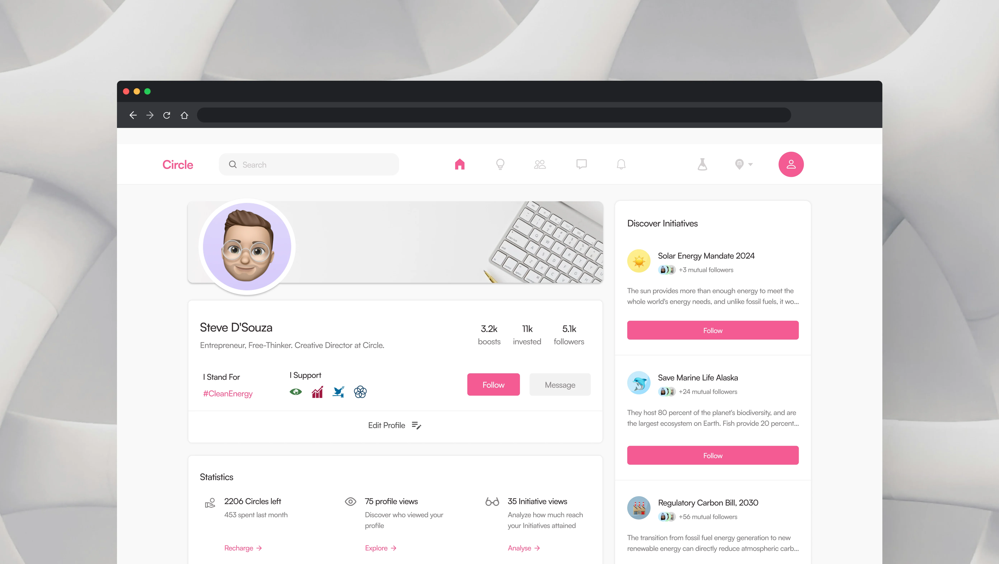
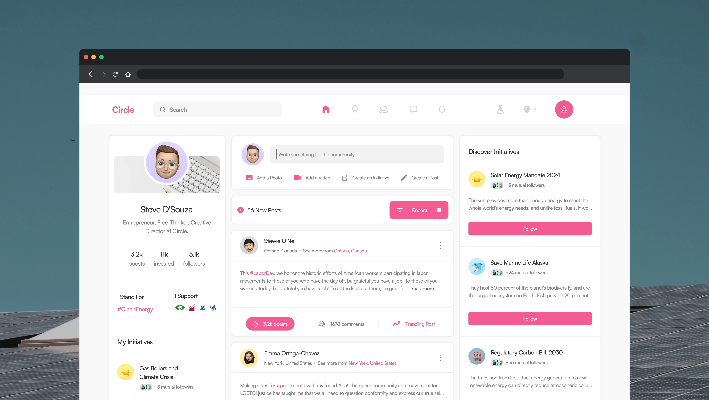

Redesigning the interface of a purpose-led social network.
I joined an early-stage startup in Delhi as the sole designer for a social networking app in 2022. I worked with stakeholders to brainstorm features, conduct audits, and lead meetings — then designed interfaces to prototype these ideas. We introduced 'Boosts' to drive retention, supporting content visibility and high-engagement posts. The in-app transaction system, 'Circles,' used triggers and social persuasion following Fogg's Behavior Model. We integrated this with posts and information-rich contexts to improve user engagement and DAU.
(01)
Users need to showcase Initiatives they invest in and Sustainability Goals they support, reflecting their values and impact. They aim to build communities driving real-world change.
(02)
Admins want to create initiatives, share progress with the community, and collaborate with brands to drive impact. They seek to invest real money in challenges they care about, to make a tangible difference.
(03)
Brands need platforms to launch or support initiatives, to improve their public image and CSR efforts. They aim to demonstrate sustainability commitment and foster deeper connections with consumers.
(04)
Everyday users want to connect with like-minded people, align on goals, and access shared resources. They seek to start group initiatives and engage brands for support.



Everyday users want to connect with like-minded people, align on goals, and access shared resources. They seek to start group initiatives and engage brands for support.
Users use the dashboard to access post performance metrics and Circle investment insights — and track the summary of their activity on the platform in a timeline.

The User Feed presents displays posts by recency or popularity — helping them discover new Initiatives and potential connections serendipitously.
The Sidebar displays information on the user’s network, initiatives to discover, and other platform offerings — additional perks for the user on the platform paywalled by membership tiers.
Initiative pages showcase engaged brands and their contributions, letting these entities vocalise their support — demonstrating social responsibility and enhancing public image.
Pages feature admin and moderators for social proof. Moderators interact with communities, share progress, and collaborate with other brands and non-profits.